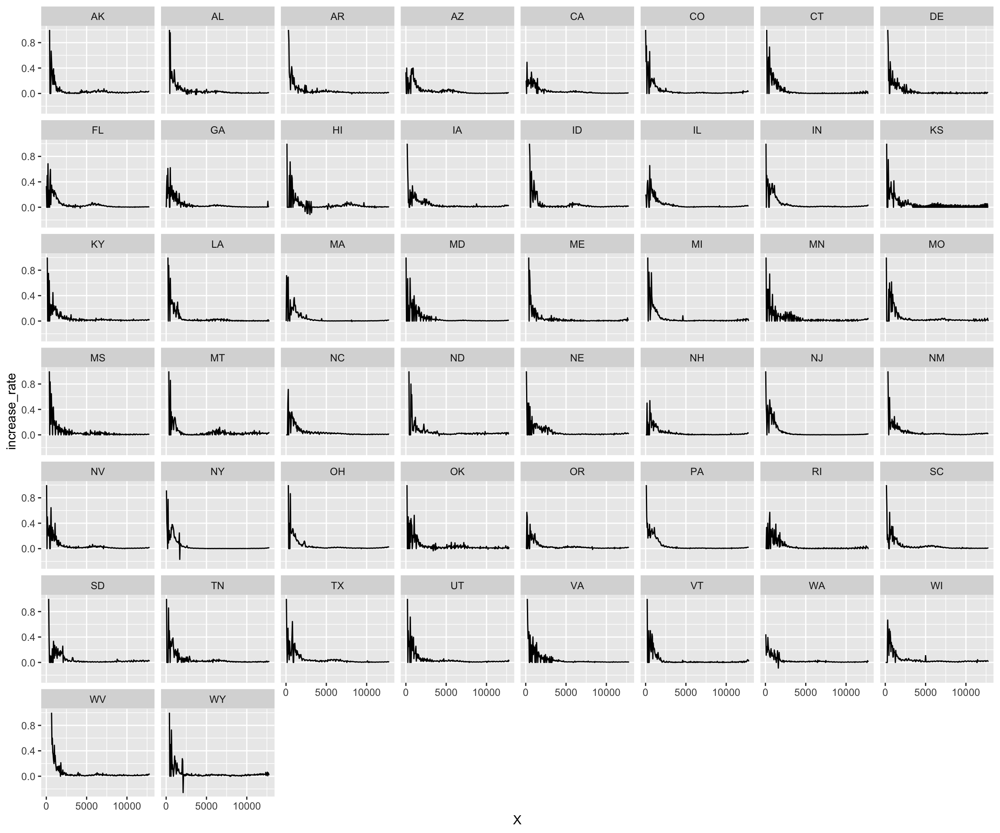

Chapter 5 Results
5.1 Parallel coordinates plot for total cases
5.2 Pie chart for inpatient beds utilization
5.3 Cleveland dot plot for inpatient bed availability

From this dot plot, we can clearly see that hospitals in most of the states increased inpatient beds. Compare to other states, FL, CA, TX and NY prepared more beds for Covid patient.
5.4 Heatmap for death rate and bed availability
This is a heatmap for available impatient beds and death rate. Because there is a delay for reporting death and death rate is more likely relating to number of available bed before death, we use the 7 days average value to see the relationship. It shows in the heapmap that
Data with death rate higher than 10% has number of available inpatient beds less than 5000.
When there are more than 15000 available inpatient beds, the death rate is below 5%.
5.5 Death rate and hospital admission rate (US)
5.6 Trend of Covid-19 in US
5.6.1 Total cases
The plots above show the trend of total cases in US from March to November. At the very beginning, we find that the pandemic only exists in NY state (with few cases in other states). As time goes on, the covid-19 cases spread rapidly through CA, TX and FL from June. From the nine plots above, it seems that the number of total cases in the east coast is higher than the one in the west and middle.
5.6.2 New cases

The plots above show the trend of increased cases in US from March to November. In March, the break-out of covid-19 occurred in NY and surrounding areas. After that, the second phrase of break-out occurred in CA, TX, FL and NY in July. After that, the cases of IL and the nearby regions also increased rapidly.
5.7 Comparison between adult and pediatric patient over time
## # A tibble: 16 x 3
## Month stat number
## <chr> <chr> <int>
## 1 04 total_adult_patients_hospitalized_confirmed_covid 2
## 2 04 total_pediatric_patients_hospitalized_confirmed_covid 0
## 3 05 total_adult_patients_hospitalized_confirmed_covid 5
## 4 05 total_pediatric_patients_hospitalized_confirmed_covid 0
## 5 06 total_adult_patients_hospitalized_confirmed_covid 5
## 6 06 total_pediatric_patients_hospitalized_confirmed_covid 0
## 7 07 total_adult_patients_hospitalized_confirmed_covid 9779
## 8 07 total_pediatric_patients_hospitalized_confirmed_covid 73
## 9 08 total_adult_patients_hospitalized_confirmed_covid 8853
## 10 08 total_pediatric_patients_hospitalized_confirmed_covid 60
## 11 09 total_adult_patients_hospitalized_confirmed_covid 4263
## 12 09 total_pediatric_patients_hospitalized_confirmed_covid 44
## 13 10 total_adult_patients_hospitalized_confirmed_covid 5759
## 14 10 total_pediatric_patients_hospitalized_confirmed_covid 44
## 15 11 total_adult_patients_hospitalized_confirmed_covid 7146
## 16 11 total_pediatric_patients_hospitalized_confirmed_covid 74